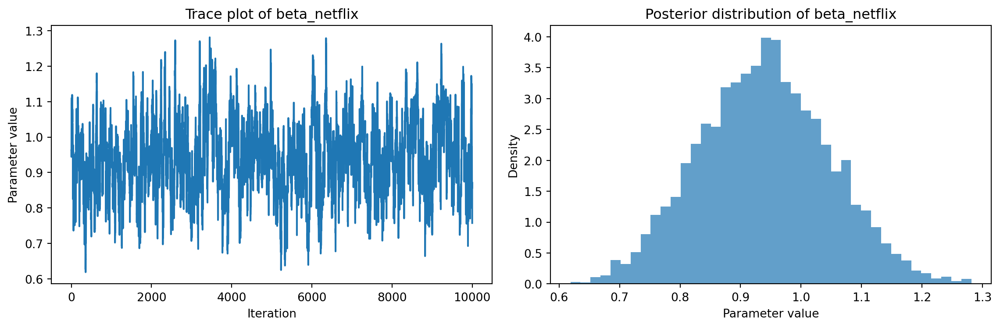

This assignment expores two methods for estimating the MNL model: (1) via Maximum Likelihood, and (2) via a Bayesian approach using a Metropolis-Hastings MCMC algorithm.
1. Likelihood for the Multi-nomial Logit (MNL) Model
Suppose we have \(i=1,\ldots,n\) consumers who each select exactly one product \(j\) from a set of \(J\) products. The outcome variable is the identity of the product chosen \(y_i \in \{1, \ldots, J\}\) or equivalently a vector of \(J-1\) zeros and \(1\) one, where the \(1\) indicates the selected product. For example, if the third product was chosen out of 3 products, then either \(y=3\) or \(y=(0,0,1)\) depending on how we want to represent it. Suppose also that we have a vector of data on each product \(x_j\) (eg, brand, price, etc.).
We model the consumer’s decision as the selection of the product that provides the most utility, and we’ll specify the utility function as a linear function of the product characteristics:
\[ U_{ij} = x_j'\beta + \epsilon_{ij} \]
where \(\epsilon_{ij}\) is an i.i.d. extreme value error term.
The choice of the i.i.d. extreme value error term leads to a closed-form expression for the probability that consumer \(i\) chooses product \(j\):
A clever way to write the individual likelihood function for consumer \(i\) is the product of the \(J\) probabilities, each raised to the power of an indicator variable (\(\delta_{ij}\)) that indicates the chosen product:
We will simulate data from a conjoint experiment about video content streaming services. We elect to simulate 100 respondents, each completing 10 choice tasks, where they choose from three alternatives per task. For simplicity, there is not a “no choice” option; each simulated respondent must select one of the 3 alternatives.
Each alternative is a hypothetical streaming offer consistent of three attributes: (1) brand is either Netflix, Amazon Prime, or Hulu; (2) ads can either be part of the experience, or it can be ad-free, and (3) price per month ranges from $4 to $32 in increments of $4.
The part-worths (ie, preference weights or beta parameters) for the attribute levels will be 1.0 for Netflix, 0.5 for Amazon Prime (with 0 for Hulu as the reference brand); -0.8 for included adverstisements (0 for ad-free); and -0.1*price so that utility to consumer \(i\) for hypothethical streaming service \(j\) is
where the variables are binary indicators and \(\varepsilon\) is Type 1 Extreme Value (ie, Gumble) distributed.
The following code provides the simulation of the conjoint data.
Note
# set seed for reproducibility
set.seed(123)
# define attributes
brand <- c("N", "P", "H") # Netflix, Prime, Hulu
ad <- c("Yes", "No")
price <- seq(8, 32, by=4)
# generate all possible profiles
profiles <- expand.grid(
brand = brand,
ad = ad,
price = price
)
m <- nrow(profiles)
# assign part-worth utilities (true parameters)
b_util <- c(N = 1.0, P = 0.5, H = 0)
a_util <- c(Yes = -0.8, No = 0.0)
p_util <- function(p) -0.1 * p
# number of respondents, choice tasks, and alternatives per task
n_peeps <- 100
n_tasks <- 10
n_alts <- 3
# function to simulate one respondent’s data
sim_one <- function(id) {
datlist <- list()
# loop over choice tasks
for (t in 1:n_tasks) {
# randomly sample 3 alts (better practice would be to use a design)
dat <- cbind(resp=id, task=t, profiles[sample(m, size=n_alts), ])
# compute deterministic portion of utility
dat$v <- b_util[dat$brand] + a_util[dat$ad] + p_util(dat$price) |> round(10)
# add Gumbel noise (Type I extreme value)
dat$e <- -log(-log(runif(n_alts)))
dat$u <- dat$v + dat$e
# identify chosen alternative
dat$choice <- as.integer(dat$u == max(dat$u))
# store task
datlist[[t]] <- dat
}
# combine all tasks for one respondent
do.call(rbind, datlist)
}
# simulate data for all respondents
conjoint_data <- do.call(rbind, lapply(1:n_peeps, sim_one))
# remove values unobservable to the researcher
conjoint_data <- conjoint_data[ , c("resp", "task", "brand", "ad", "price", "choice")]
# clean up
rm(list=setdiff(ls(), "conjoint_data"))
3. Preparing the Data for Estimation
The “hard part” of the MNL likelihood function is organizing the data, as we need to keep track of 3 dimensions (consumer \(i\), covariate \(k\), and product \(j\)) instead of the typical 2 dimensions for cross-sectional regression models (consumer \(i\) and covariate \(k\)). The fact that each task for each respondent has the same number of alternatives (3) helps. In addition, we need to convert the categorical variables for brand and ads into binary variables.
Note
import pandas as pd# Load datadf = pd.read_csv("conjoint_data.csv")# Brand dummies: N = 1 if Netflix, P = 1 if Prime, H as referencedf['brand_N'] = (df['brand'] =='N').astype(int)df['brand_P'] = (df['brand'] =='P').astype(int)# H is reference (both dummies 0)# Ad: 1 if 'Yes', 0 if 'No'df['ad_YES'] = (df['ad'] =='Yes').astype(int)# Reorder or select only the necessary columns for estimationprepared_df = df[['resp', 'task', 'choice', 'brand_N', 'brand_P', 'ad_YES', 'price']]# Preview the prepared dataprint(prepared_df.head())
To estimate the parameters of the multinomial logit (MNL) model, we implement the log-likelihood function and use numerical optimization to find the parameter values that maximize it.
We implement this as a negative log-likelihood function (for minimization) across all choice sets.
import numpy as npimport pandas as pdfrom scipy.optimize import minimizefrom scipy.stats import normdef neg_log_likelihood(beta, X, y, groups):""" Negative log-likelihood for the multinomial logit (MNL) model. """ ll =0.0 utilities = X @ betafor g in np.unique(groups): idx = (groups == g) utils = utilities[idx] exp_utils = np.exp(utils - np.max(utils)) # for numerical stability probs = exp_utils / exp_utils.sum() ll += np.log(probs[y[idx] ==1][0])return-ll
Having defined the negative log-likelihood function for the multinomial logit (MNL) model in part (a), we now proceed to estimate the model parameters using numerical optimization.
We use scipy.optimize.minimize to find the values of the four parameters—\(\beta_\text{netflix}\), \(\beta_\text{prime}\), \(\beta_\text{ads}\), and \(\beta_\text{price}\)—that maximize the log-likelihood given our data. After obtaining the maximum likelihood estimates (MLEs), we use the inverse of the Hessian matrix (the observed information matrix) to compute standard errors for each parameter. This allows us to construct 95% confidence intervals and assess the statistical significance of each effect.
The following code performs this optimization, extracts the estimates, standard errors, and confidence intervals, and displays the results for interpretation.
Note
X = prepared_df[['brand_N', 'brand_P', 'ad_YES', 'price']].valuesy = prepared_df['choice'].valuesgroups = prepared_df.groupby(['resp', 'task']).ngroup().values# Initial guessinit_beta = np.zeros(X.shape[1])# Run the optimizationresult = minimize( neg_log_likelihood, init_beta, args=(X, y, groups), method='BFGS')# Extract estimatesbeta_hat = result.xparam_names = ['beta_netflix', 'beta_prime', 'beta_ads', 'beta_price']# Calculate standard errors from the inverse Hessianhess_inv = result.hess_invifhasattr(hess_inv, 'todense'): # For scipy>=1.9, returns a LinearOperator cov = np.array(hess_inv.todense())else: cov = hess_invstd_errors = np.sqrt(np.diag(cov))# 95% Confidence Intervalsz =1.96conf_int = np.array([ beta_hat - z * std_errors, beta_hat + z * std_errors]).T# Show resultsfor i, name inenumerate(param_names):print(f"{name:>12}: {beta_hat[i]: .3f} (SE = {std_errors[i]:.3f}), 95% CI: [{conf_int[i,0]:.3f}, {conf_int[i,1]:.3f}]")print("Log-likelihood at optimum:", -result.fun)
We now find the MLEs using scipy.optimize.minimize.
The coefficients for beta_netflix and beta_prime are both positive and statistically significant (their confidence intervals do not include zero), indicating that, all else equal, both Netflix and Amazon Prime are preferred to the reference brand (Hulu). The preference for Netflix is higher (0.941) than for Prime (0.502), which aligns with the simulation design where Netflix was given the largest utility.
All four estimated coefficients are statistically significant at conventional levels, with confidence intervals that do not include zero.
Magnitude and Relative Importance - Netflix has the strongest positive effect on choice, followed by Prime. - Ads and Price both reduce the probability of choice, with Ads having a substantial negative effect (almost as large as the positive effect of being Netflix). - The price effect is negative and, while numerically smaller, is very precisely estimated and economically meaningful—each $1 increase in price reduces the utility of a service by about 0.1.
The log-likelihood at optimum is -879.86. While the absolute value itself isn’t directly interpretable, it provides a benchmark for model comparison (e.g., when adding more predictors or comparing to a null model).
Overall, these results confirm that brand, advertising, and price all significantly influence consumer choices in this simulated conjoint setting, and the estimated effects are consistent with the underlying simulation design. Netflix and Prime are preferred over Hulu, no ads are preferred over ads, and lower prices are better for uptake.
5. Estimation via Bayesian Methods
In this section, we estimate the parameters of the multinomial logit (MNL) model using Bayesian methods. Instead of seeking a single set of maximum likelihood estimates, we aim to characterize the full posterior distribution of each parameter given the data and our prior beliefs.
To do this, we implement a Metropolis-Hastings Markov Chain Monte Carlo (MCMC) sampler. This algorithm generates a sequence of draws from the posterior distribution by iteratively proposing new parameter values and accepting or rejecting them according to their posterior probabilities. Over time, the collection of accepted samples provides an empirical approximation of the posterior.
For the binary variable coefficients (brand and ad), we use Normal priors with mean 0 and variance 5 and for the price coefficient, we use a Normal prior with mean 0 and variance 1.
We propose new values for each parameter by adding Gaussian noise to the current values. Following the assignment hint, the proposal standard deviations are: - 0.05 for the three binary variable coefficients - 0.005 for the price coefficient
Note
import numpy as np# --- Helper functions ---def log_prior(beta):# N(0,5) for first three (binary variable) betas, N(0,1) for price beta logp =0# Binary betasfor b in beta[:3]: logp +=-0.5* np.log(2* np.pi *5) -0.5* (b**2) /5# Price beta logp +=-0.5* np.log(2* np.pi *1) -0.5* (beta[3]**2) /1return logpdef log_posterior(beta, X, y, groups):# Posterior (up to a constant): log-likelihood + log-priorreturn-neg_log_likelihood(beta, X, y, groups) + log_prior(beta)# --- Metropolis-Hastings MCMC Sampler ---n_steps =11000burn_in =1000# Initial values (start at 0)current_beta = np.zeros(4)current_log_post = log_posterior(current_beta, X, y, groups)samples = []# Proposal standard deviations (as per instructions)proposal_sd = np.array([0.05, 0.05, 0.05, 0.005])rng = np.random.default_rng(seed=123) # for reproducibilityfor step inrange(n_steps):# Propose new beta: current + N(0, proposal_sd) proposal = current_beta + rng.normal(0, proposal_sd) proposal_log_post = log_posterior(proposal, X, y, groups)# Acceptance probability log_accept_ratio = proposal_log_post - current_log_postif np.log(rng.uniform()) < log_accept_ratio:# Accept current_beta = proposal current_log_post = proposal_log_post# else: stay at current_beta samples.append(current_beta.copy())# Convert samples to NumPy arraysamples = np.array(samples)posterior_samples = samples[burn_in:] # discard first 1000# Summary statisticsmean_post = posterior_samples.mean(axis=0)sd_post = posterior_samples.std(axis=0)ci_lower = np.percentile(posterior_samples, 2.5, axis=0)ci_upper = np.percentile(posterior_samples, 97.5, axis=0)param_names = ['beta_netflix', 'beta_prime', 'beta_ads', 'beta_price']for i, name inenumerate(param_names):print(f"{name:>12}: mean={mean_post[i]:.3f}, SD={sd_post[i]:.3f}, 95% CI: [{ci_lower[i]:.3f}, {ci_upper[i]:.3f}]")# Optional: Posterior traces/plotsimport matplotlib.pyplot as pltplt.figure(figsize=(12,6))for i, name inenumerate(param_names): plt.plot(posterior_samples[:, i], label=name)plt.xlabel('Iteration')plt.ylabel('Parameter Value')plt.legend()plt.title('Posterior Trace Plots (After Burn-in)')plt.show()
The trace plot above shows the sampled values for each parameter over the 10,000 retained MCMC iterations after burn-in. All four parameters—beta_netflix, beta_prime, beta_ads, and beta_price—exhibit good mixing and stationarity, with no visible signs of divergence or non-convergence. This indicates that the Metropolis-Hastings sampler has successfully explored the posterior distribution for each parameter.
To visually assess the mixing and convergence of the MCMC algorithm for at least one parameter, and to understand the shape of its posterior distribution, we plot the trace (the sampled values over iterations) and the histogram (posterior density) for beta_netflix.
Note
param_names = ['beta_netflix', 'beta_prime', 'beta_ads', 'beta_price']# Pick one parameter to show detailed plots (e.g., beta_netflix = column 0)i =0# 0 for beta_netflixfig, axes = plt.subplots(1, 2, figsize=(12,4))# Trace plotaxes[0].plot(posterior_samples[:, i])axes[0].set_title(f'Trace plot of {param_names[i]}')axes[0].set_xlabel('Iteration')axes[0].set_ylabel('Parameter value')# Histogram (posterior density)axes[1].hist(posterior_samples[:, i], bins=40, density=True, alpha=0.7)axes[1].set_title(f'Posterior distribution of {param_names[i]}')axes[1].set_xlabel('Parameter value')axes[1].set_ylabel('Density')plt.tight_layout()plt.show()

The two plots above provide visual diagnostics and insight into the Bayesian posterior inference for the beta_netflix parameter:
Trace Plot (left): The trace plot shows the sampled values of beta_netflix across 10,000 post-burn-in MCMC iterations. The chain appears to mix well, rapidly exploring the parameter space without getting stuck for long stretches. This behavior suggests good convergence of the sampler and indicates that our posterior summaries are reliable.
Posterior Histogram (right): The histogram displays the empirical posterior distribution for beta_netflix. The distribution is unimodal and approximately symmetric, centered around 0.94. This shape indicates that the data provide clear evidence about the magnitude of the brand preference for Netflix, and there is little posterior probability assigned to much lower or higher values.
Next, we summarize the posterior samples for all four parameters. For each parameter, we report the posterior mean, standard deviation, and 95% credible interval. We also provide the maximum likelihood estimate (MLE) and its 95% confidence interval from the previous analysis, so we can directly compare the Bayesian and frequentist results.
Interpretation and Comparison - For all four parameters, the posterior means are nearly identical to the MLE point estimates. - The Bayesian 95% credible intervals are also very similar to the MLE 95% confidence intervals, with only slight differences in width due to the influence of the priors and the exact calculation method. - This high degree of agreement indicates that the priors were not very informative (as intended), and the data are highly informative about the parameter values.
Both Bayesian and frequentist (MLE) estimation approaches yield very consistent results in this application. This reinforces confidence in the substantive findings and illustrates the practical similarity of these two methods when using relatively uninformative priors and a well-behaved, simulated dataset.
6. Discussion
Interpretation of Parameter Estimates If we did not know the true values (i.e., if this were real, not simulated, data), our parameter estimates would still be highly interpretable: - Brand Preference (\(\beta_\text{Netflix} > \beta_\text{Prime}\)): The fact that \(\beta_\text{Netflix}\) is greater than \(\beta_\text{Prime}\) means that, holding all else equal, consumers have a stronger preference for Netflix over Prime. In the context of a choice model, the size of the coefficient reflects the relative impact on the utility (and hence, the choice probability) of each alternative. This is consistent with what we might expect if, for example, Netflix had a better brand reputation or a more attractive offering than Prime. - Negative Price Coefficient (\(\beta_\text{price} < 0\)): It makes intuitive sense that \(\beta_\text{price}\) is negative. This implies that, all else equal, as the price of a streaming service increases, its likelihood of being chosen decreases. This matches fundamental economic intuition: consumers prefer to pay less for the same product attributes.
Multi-level (Random-Parameter or Hierarchical) Models In real-world conjoint studies, not every consumer is assumed to have the same preferences. Instead, we often model heterogeneity in tastes across individuals by estimating a multi-level (or hierarchical) model—sometimes called a random-parameters model.
Simulation Changes for a Multi-level Model To simulate data for a multi-level model: - Instead of assigning the same set of \(\beta\) coefficients to every respondent, you would randomly draw a set of coefficients for each individual from a population distribution (e.g., a multivariate normal distribution with specified means and variances). - When simulating choices, each individual’s choices would be based on their own personal \(\beta\) vector, capturing their unique preferences.
Estimation Changes for a Multi-level Model - In estimation, you would fit a model that allows for individual-level coefficients, often specifying that each respondent’s \(\beta_i\) is drawn from a common population distribution with unknown mean and variance (hierarchical Bayes, or mixed logit). - This generally requires more advanced computational methods (e.g., hierarchical MCMC or maximum simulated likelihood), but allows you to infer both the average effect and the distribution of preferences in the population.
Why Multi-level Models? - Multi-level models are crucial in practice because they capture real differences in tastes across respondents, yielding more realistic and actionable insights (e.g., market segmentation, targeted marketing). - They also produce more accurate predictions of choice and allow you to quantify the variation in price sensitivity, brand loyalty, and ad aversion across consumers.